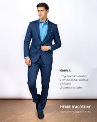

Estilos de Moda y Tendencias
La moda es una forma de expresión que evoluciona constantemente, reflejando la cultura, la creatividad y las preferencias de cada época. A continuación, exploramos algunas de las tendencias más destacadas del momento.

Estilo Minimalista
Prendas simples, colores neutros y diseños funcionales son la clave del estilo minimalista, ideal para quienes buscan elegancia y comodidad.
Moda Sostenible
La sostenibilidad está marcando tendencia con ropa fabricada a partir de materiales reciclados y procesos amigables con el medio ambiente.
Estilo Retro
Inspirado en décadas pasadas, el estilo retro combina patrones llamativos y colores vibrantes para un look nostálgico y único.
Accesorios en Tendencia
- Bolsos de mano tejidos
- Gafas de sol oversized
- Sombreros bucket
- Joyas minimalistas
- Cinturones anchos